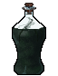
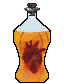
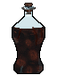
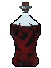
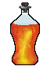
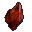
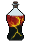
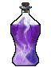
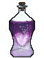
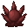

Путь «Красный Жрец»
От слабой к сильной: Seq 9 «Охотник» → Seq 1 «Завоеватель». Сменить путь можно на «Демонесса» — с Seq 5 и сильнее, зельем на ступень выше (как).
| Seq | Последовательность | Ступень сервера |
|---|---|---|
| 9 | Охотник | II |
| 8 | Провокатор | III |
| 7 | Пироман | IV |
| 6 | Заговорщик | V |
| 5 | Жнец | VI |
| 4 | Рыцарь Железной Крови | VII |
| 3 | Епископ Войны | VIII |
| 2 | Колдун Погоды | — |
| 1 | Завоеватель | — |
У каждой последовательности: зелье и его ингредиенты (главный — первым), способности, которые она открывает, и отыгрыш — действия, которые переваривают зелье. Ингредиенты указаны с двумя самыми доступными источниками; все — по ссылке. Ингредиенты Seq 9–6 этого пути бывают и в товарах у жителя Торговец Потусторонних — у каждого по 2 случайных предложения на уровень (цены).
Seq 9 · Охотник
Зелье  Охотник Зелье, формула
Охотник Зелье, формула  Охотник Рецепт зелья (Последовательность 9). Эта Seq нужна для ступени II.
Охотник Рецепт зелья (Последовательность 9). Эта Seq нужна для ступени II.
Ингредиенты
 Порошок краснокоронного бальзамина — блок: Мёртвый куст (в биоме: пустошь) — 8 % за блок. Все источники (2)
Порошок краснокоронного бальзамина — блок: Мёртвый куст (в биоме: пустошь) — 8 % за блок. Все источники (2) Красное вино — сундук: Клад — 40 %; житель: Фермер (уровень «мастер») — 24 изумруда, до 2 сделок. Все источники (4)
Красное вино — сундук: Клад — 40 %; житель: Фермер (уровень «мастер») — 24 изумруда, до 2 сделок. Все источники (4) Цветок красного каштана — существо мода: Пузырь (водится: Мир духов; приходит и Ночью Мира духов) — 38 % за убийство. Все источники (2)
Цветок красного каштана — существо мода: Пузырь (водится: Мир духов; приходит и Ночью Мира духов) — 38 % за убийство. Все источники (2) Порошок тополиных листьев — существо мода: Пузырь (водится: Мир духов; приходит и Ночью Мира духов) — 38 % за убийство. Все источники (2)
Порошок тополиных листьев — существо мода: Пузырь (водится: Мир духов; приходит и Ночью Мира духов) — 38 % за убийство. Все источники (2) Базилик — сундук: Хранилище Испытательных залов, Зловещее хранилище Испытательных залов — 20 %. Все источники (2)
Базилик — сундук: Хранилище Испытательных залов, Зловещее хранилище Испытательных залов — 20 %. Все источники (2)
Способности
- Медитация — Медитировать, восполняя духовность
- Ловушка — Установить взрывную ловушку
- Физическое усиление (пассивная)
Отыгрыш — переваривание за действие и перерыв между засчитанными:
- Убить сильного моба — 0,95 %, раз в 5 с
- Поймать рыбу — 0,47 %, раз в 10 с
- Убить моба, не нацеленного на вас — 0,47 %, раз в 5 с
- Убить из лука — 0,76 %, раз в 5 с
- Приручить животное — 0,47 %, раз в 15 с
- Бежать — 0,095 %, раз в 10 с
- Убить исподтишка — 0,76 %, раз в 5 с
Seq 8 · Провокатор
Зелье  Провокатор Рецепт зелья (Последовательность 8). Эта Seq нужна для ступени III.
Провокатор Рецепт зелья (Последовательность 8). Эта Seq нужна для ступени III.
Ингредиенты
- Порошок краснокоронного бальзамина — блок: Мёртвый куст (в биоме: пустошь) — 8 % за блок. Все источники (2)
 Дистиллированный спирт — крафт: печь. Все источники (2)
Дистиллированный спирт — крафт: печь. Все источники (2) Экстракт жимолости — сундук: Большие подводные руины — 35 %; сундук: Затонувший корабль (сокровища) — 30 %. Все источники (3)
Экстракт жимолости — сундук: Большие подводные руины — 35 %; сундук: Затонувший корабль (сокровища) — 30 %. Все источники (3) Порошок виноградной лозы — блок: Лианы (ножницами) — 40 % за блок. Все источники (2)
Порошок виноградной лозы — блок: Лианы (ножницами) — 40 % за блок. Все источники (2) Эфирное масло граба — пустая бутылка: Дубовое бревно (в биоме: Березняк, Реликтовый березняк) — 50 % за попытку, бутылка остывает 1 с. Все источники (2)
Эфирное масло граба — пустая бутылка: Дубовое бревно (в биоме: Березняк, Реликтовый березняк) — 50 % за попытку, бутылка остывает 1 с. Все источники (2)
Способности
- Духовное зрение
- Провокация — Провоцировать и ослаблять врагов
Отыгрыш — переваривание за действие и перерыв между засчитанными:
- Атаковать более сильного моба — 0,84 %, раз в 5 с
- Убить, будучи в меньшинстве — 0,84 %, раз в 5 с
- Применить «Провокация» — 1,7 %, раз в 15 с
- Получить урон, будучи в меньшинстве — 0,67 %, раз в 5 с
- Позвонить в колокол — 0,42 %, раз в 10 с
- Убить при полном здоровье — 0,5 %, раз в 5 с
Seq 7 · Пироман
Зелье  Пироман Рецепт зелья (Последовательность 7). Эта Seq нужна для ступени IV.
Пироман Рецепт зелья (Последовательность 7). Эта Seq нужна для ступени IV.
Ингредиенты
 Железа огненной саламандры — добыча: Магмовый куб (размер 2 и больше) — 8 % за убийство игроком; существо мода: Каменный голем (водится: весь верхний мир) — 8,9 % за убийство. Все источники (3)
Железа огненной саламандры — добыча: Магмовый куб (размер 2 и больше) — 8 % за убийство игроком; существо мода: Каменный голем (водится: весь верхний мир) — 8,9 % за убийство. Все источники (3) Кровь огненной саламандры — пустая бутылка: источник лавы — 50 % за попытку, бутылка остывает 2 с, обжигает: огонь на 4 с и 2 урона; сундук: Постройки Мира духов — 35 %. Все источники (4)
Кровь огненной саламандры — пустая бутылка: источник лавы — 50 % за попытку, бутылка остывает 2 с, обжигает: огонь на 4 с и 2 урона; сундук: Постройки Мира духов — 35 %. Все источники (4) Порошок магмового пироксена — крафт: верстак; сундук: Постройки Мира духов — 27 %. Все источники (4)
Порошок магмового пироксена — крафт: верстак; сундук: Постройки Мира духов — 27 %. Все источники (4) Экстракт солнечной звезды — крафт: верстак; существо мода: Погибель (водится: Мир духов; приходит и Ночью Мира духов) — 5 % за убийство. Все источники (3)
Экстракт солнечной звезды — крафт: верстак; существо мода: Погибель (водится: Мир духов; приходит и Ночью Мира духов) — 5 % за убийство. Все источники (3)- Красное вино — сундук: Клад — 40 %; житель: Фермер (уровень «мастер») — 24 изумруда, до 2 сделок. Все источники (4)
Способности
- Пирокинез — Управлять пламенем: метать огненные шары, возводить стены огня, призывать огненных воронов, сгущать огненные копья и охватывать огнём всё вокруг
- Сжатие — Сжимает мощное пламя в багровые огненные шары; три сжатых шара открывают большой огненный шар
- Огненный доспех — Создаёт пластины огня: они защищают от обычных атак и полностью выжигают атаки Потусторонних
Стоит 10% духовности при создании и 2% за каждую защиту.
- Огненное усиление — Силой багрового пламени создаёт оружие, которое сжигает всё, чего касается, и помогает в бою
- Огненный удар (пассивная)
- Огнестойкость (пассивная)
Отыгрыш — переваривание за действие и перерыв между засчитанными:
- Поджечь — 0,74 %, раз в 5 с
- Убить горящего моба — 1,1 %, раз в 5 с
- Применить «Пирокинез» — 1,5 %, раз в 15 с
- Создать огненный заряд — 0,44 %, раз в 15 с
- Создать огниво — 0,44 %, раз в 15 с
- Стоять рядом с лавой — 0,15 %, раз в 10 с
- Поставить динамит — 0,59 %, раз в 10 с
- Гореть — 0,29 %, раз в 5 с
Seq 6 · Заговорщик
Зелье  Заговорщик Рецепт зелья (Последовательность 6). Эта Seq нужна для ступени V.
Заговорщик Рецепт зелья (Последовательность 6). Эта Seq нужна для ступени V.
Ингредиенты
 Мозг сфинкса — сундук: Пустынный храм — 25 %; существо мода: Демон знания (водится: Мир духов, океаны; приходит и Ночью Мира духов) — 19 % за убийство. Все источники (3)
Мозг сфинкса — сундук: Пустынный храм — 25 %; существо мода: Демон знания (водится: Мир духов, океаны; приходит и Ночью Мира духов) — 19 % за убийство. Все источники (3)- Эфирное масло граба — пустая бутылка: Дубовое бревно (в биоме: Березняк, Реликтовый березняк) — 50 % за попытку, бутылка остывает 1 с. Все источники (2)
- Порошок виноградной лозы — блок: Лианы (ножницами) — 40 % за блок. Все источники (2)
- Базилик — сундук: Хранилище Испытательных залов, Зловещее хранилище Испытательных залов — 20 %. Все источники (2)
- Красное вино — сундук: Клад — 40 %; житель: Фермер (уровень «мастер») — 24 изумруда, до 2 сделок. Все источники (4)
Отыгрыш — переваривание за действие и перерыв между засчитанными:
- Убить исподтишка — 0,63 %, раз в 2 с
- Поставить динамит — 0,63 %, раз в 10 с
- Убить, будучи в меньшинстве — 0,63 %, раз в 5 с
- Убить моба, не нацеленного на вас — 0,38 %, раз в 5 с
- Создать динамит — 0,38 %, раз в 20 с
- Использовать кафедру — 0,32 %, раз в 15 с
Seq 5 · Жнец
Зелье  Жнец Рецепт зелья (Последовательность 5). Эта Seq нужна для ступени VI.
Жнец Рецепт зелья (Последовательность 5). Эта Seq нужна для ступени VI.
Ингредиенты
 Фасеточные глаза чёрного паука-охотника — крафт: верстак; существо мода: Злоуст (водится: Мир духов; приходит и Ночью Мира духов) — 9,9 % за убийство.
Фасеточные глаза чёрного паука-охотника — крафт: верстак; существо мода: Злоуст (водится: Мир духов; приходит и Ночью Мира духов) — 9,9 % за убийство.- Кровь огненной саламандры — пустая бутылка: источник лавы — 50 % за попытку, бутылка остывает 2 с, обжигает: огонь на 4 с и 2 урона; сундук: Постройки Мира духов — 35 %. Все источники (4)
- Порошок магмового пироксена — крафт: верстак; сундук: Постройки Мира духов — 27 %. Все источники (4)
- Экстракт солнечной звезды — крафт: верстак; существо мода: Погибель (водится: Мир духов; приходит и Ночью Мира духов) — 5 % за убийство. Все источники (3)
- Экстракт жимолости — сундук: Большие подводные руины — 35 %; сундук: Затонувший корабль (сокровища) — 30 %. Все источники (3)
Способности
- Огненные двойники — Создаёт огненных двойников силы последовательности 8: они сбивают врагов с толку и помогают в бою
- Жатва — Распознать врагов и их слабости, чтобы наносить им больше урона
Отыгрыш — переваривание за действие и перерыв между засчитанными:
- Убить сильного моба — 0,53 %, раз в 5 с
- Убить при полном здоровье — 0,53 %, раз в 2 с
- Убить нежить — 0,32 %, раз в 5 с
- Убить, будучи в меньшинстве — 0,42 %, раз в 5 с
- Убить из лука — 0,32 %, раз в 5 с
- Убить голыми руками — 0,32 %, раз в 5 с
Seq 4 · Рыцарь Железной Крови
Зелье  Рыцарь Железной Крови Рецепт зелья (Последовательность 4). Эта Seq нужна для ступени VII.
Рыцарь Железной Крови Рецепт зелья (Последовательность 4). Эта Seq нужна для ступени VII.
Ингредиенты

Ядро магмового великана — сундук: Замок Красного Жреца — 9 %; сундук: Постройки Мира духов — 7 %. Все источники (3)- Порошок магмового пироксена — крафт: верстак; сундук: Постройки Мира духов — 27 %. Все источники (4)
- Порошок краснокоронного бальзамина — блок: Мёртвый куст (в биоме: пустошь) — 8 % за блок. Все источники (2)
- Дистиллированный спирт — крафт: печь. Все источники (2)
 Железный слиток — обычный предмет
Железный слиток — обычный предмет
Способности
- Гадание
- Мифическая форма
- Власть над пламенем — Усиленный пирокинез. Метайте во врагов несколько огненных шаров, вызывайте мощный огненный взрыв или обращайтесь в пламя и парите в небе
- Власть над сталью — Обратить тело в сталь, чтобы гасить урон, или обратить пламя в сталь и сковать им врагов
- Цепь подчинения — Сделать существ своими подчинёнными. Они сражаются за вас, и вы можете распределять между ними получаемый урон.
Отыгрыш — переваривание за действие и перерыв между засчитанными:
- Убить, будучи в меньшинстве — 0,42 %, раз в 5 с
- Убить при низком здоровье — 0,63 %, раз в 2 с
- Атаковать более сильного моба — 0,42 %, раз в 5 с
- Создать железную броню — 0,34 %, раз в 20 с
- Создать железный инструмент — 0,25 %, раз в 15 с
- Выжить на грани смерти — 0,25 %, раз в 5 с
- Получить урон — 0,084 %, раз в 5 с
Seq 3 · Епископ Войны
Зелье  Епископ Войны Рецепт зелья (Последовательность 3). Эта Seq нужна для ступени VIII.
Епископ Войны Рецепт зелья (Последовательность 3). Эта Seq нужна для ступени VIII.
Ингредиенты
- Ядро кометы войны — сундук: Замок Красного Жреца — 9 %; существо мода: Каменный голем (водится: весь верхний мир) — 1,9 % за убийство.
- Порошок магмового пироксена — крафт: верстак; сундук: Постройки Мира духов — 27 %. Все источники (4)
- Экстракт солнечной звезды — крафт: верстак; существо мода: Погибель (водится: Мир духов; приходит и Ночью Мира духов) — 5 % за убийство. Все источники (3)
- Экстракт жимолости — сундук: Большие подводные руины — 35 %; сундук: Затонувший корабль (сокровища) — 30 %. Все источники (3)
 Огненный порошок — обычный предмет
Огненный порошок — обычный предмет
Способности
- Боевой клич — Оглушительный клич, ранящий врагов и усиливающий ваши способности
- Боевая песнь — Песней усилить свою силу и скорость
- Туман войны — Создать густой туман, мешающий врагам и дающий вам преимущество
- Сущность войны — Призвать знамя, в области которого враги сильно ослаблены, а вы усилены
- Жертвоприношение — Принести жертву Сущности войны ради силы.
Отыгрыш — переваривание за действие и перерыв между засчитанными:
- Поторговать с жителем — 0,47 %, раз в 20 с
- Приручить животное — 0,32 %, раз в 15 с
- Применить «Боевой клич» — 0,63 %, раз в 15 с
- Использовать маяк — 0,32 %, раз в 30 с
- Использовать стол зачаровывания — 0,19 %, раз в 10 с
- Использовать наковальню — 0,16 %, раз в 10 с
Seq 2 · Колдун Погоды
Зелье  Колдун Погоды Рецепт зелья (Последовательность 2).
Колдун Погоды Рецепт зелья (Последовательность 2).
Ингредиенты
 Колдун Погоды Характеристика Потустороннего (Последовательность 2) — характеристика Потустороннего
Колдун Погоды Характеристика Потустороннего (Последовательность 2) — характеристика Потустороннего- Порошок магмового пироксена — крафт: верстак; сундук: Постройки Мира духов — 27 %. Все источники (4)
- Красное вино — сундук: Клад — 40 %; житель: Фермер (уровень «мастер») — 24 изумруда, до 2 сделок. Все источники (4)
- Экстракт солнечной звезды — крафт: верстак; существо мода: Погибель (водится: Мир духов; приходит и Ночью Мира духов) — 5 % за убийство. Все источники (3)
- Громоотвод — обычный предмет
Способности
- Власть ангела — Ангельская сила: странствуйте по Миру духов и сокрушайте артефакты
- Полёт — Порхай как бабочка, жаль как оса
- Управление погодой — Менять погоду: снежные бури, засуха и смерчи
Отыгрыш — переваривание за действие и перерыв между засчитанными:
- Бросить взрывное зелье — 0,21 %, раз в 5 с
- Убить горящего моба — 0,21 %, раз в 5 с
- Применить «Управление погодой» — 0,63 %, раз в 20 с
- Стоять под дождём — 0,063 %, раз в 10 с
- Убить под дождём — 0,13 %, раз в 5 с
Seq 1 · Завоеватель
Зелье  Завоеватель Рецепт зелья (Последовательность 1).
Завоеватель Рецепт зелья (Последовательность 1).
Ингредиенты

Завоеватель Характеристика Потустороннего (Последовательность 1) — характеристика Потустороннего- Красное вино — сундук: Клад — 40 %; житель: Фермер (уровень «мастер») — 24 изумруда, до 2 сделок. Все источники (4)
- Экстракт жимолости — сундук: Большие подводные руины — 35 %; сундук: Затонувший корабль (сокровища) — 30 %. Все источники (3)
- Базилик — сундук: Хранилище Испытательных залов, Зловещее хранилище Испытательных залов — 20 %. Все источники (2)
 Золотой слиток — обычный предмет
Золотой слиток — обычный предмет
Способности
- Покорение — Покорить всех существ вокруг. Те, чья последовательность ниже, становятся совершенно беспомощны, остальные с трудом сопротивляются
- Власть над пламенем — Повелевать пурпурным пламенем: метать копья разрушения, призывать геенну, обращающую всё внутри в прах, и огненный вихрь, дотла сжигающий всё живое вокруг
Отыгрыш — переваривание за действие и перерыв между засчитанными:
- Убить сильного моба — 0,16 %, раз в 5 с
- Убить при низком здоровье — 0,16 %, раз в 2 с
- Применить «Покорение» — 0,32 %, раз в 20 с
- Убить босса — 0,21 %, раз в 1 мин
- Поставить флаг — 0,063 %, раз в 20 с